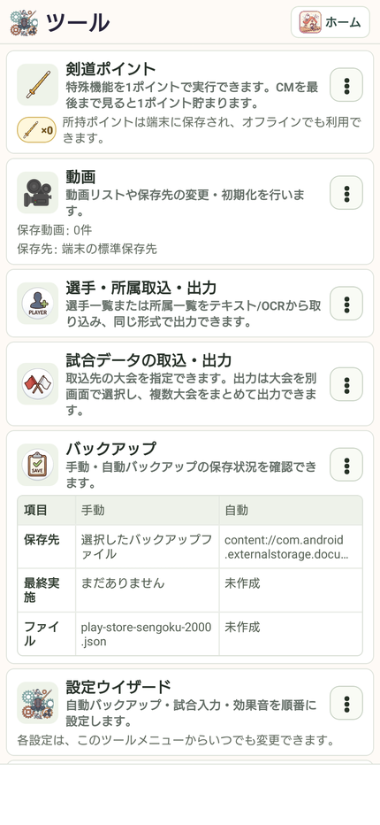

23 / 大切な記録を守る
剣道ポイントを確認する
対象機能を使う前に、ポイントの残高と利用内容を確認できます。
操作の入口ホームのポイント表示 ／ ツール → 剣道ポイント
残高を確認する
ホームとツールに所持ポイントが表示されます。
利用確認を読む
特殊機能を使うとき、機能名と1ポイントの利用確認が表示されます。実行する場合だけ進みます。
ポイントをためる
ツールの「剣道ポイント」から「ポイントをためる」へ進みます。CMを最後まで見ると1ポイント貯まります。
オフライン利用を準備する
所持ポイントは端末に保存されます。会場へ行く前に残高を確認しておくと安心です。

